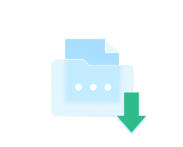

Neribota prieiga prie daugiau nei 130
laikraščių ir žurnalų
TheKiosk – tai paslauga, suteikianti jums prieigą prie mėgstamų žurnalų bet kuriuo metu ir bet kur. SMS žinutė, išsiųsta trumpuoju numeriu 1337, kainuoja 10 € su PVM. Tai nėra prenumeratos paslauga. Mokestis taikomas tik už kiekvieną jūsų išsiųstą SMS žinutę. Jei norite nustoti naudotis paslauga, tiesiog nebesiųskite SMS žinučių trumpuoju numeriu 1337. Palaikomi mobiliojo ryšio operatoriai: Telia, Bitė, Tele2. Turinio ir reklamos kampanijos teikėjas: PLAYWING LTD, 2 Cresswell Gardens, F-3, SW5 0BJ, Londonas, Jungtinė Karalystė, registruota Jungtinės Karalystės įmonių registre. Klientų aptarnavimas: support@thekiosk.co.
MT žinutė: Dėkojame, kad sumokėjote už TheKiosk paslaugą. Mokestis yra 10 € su PVM ir suteikia jums prieigą prie paslaugos 15 dienų. Suma bus įtraukta į jūsų mobiliojo telefono sąskaitą.
Jei reikia pagalbos, susisiekite: support@thekiosk.com.